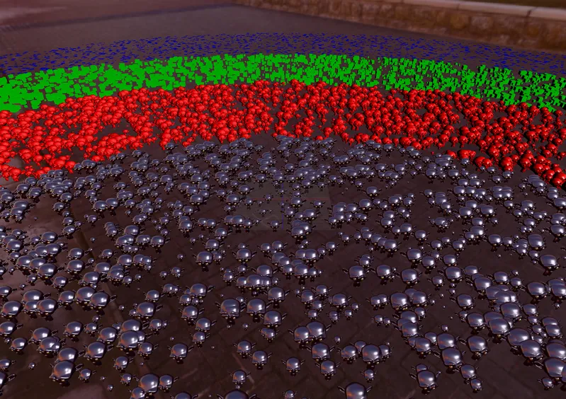

3D Optimization LOD
InstancedMesh Multi-Material GPU LOD - RedGPU WebGPU Example
GPU-driven LOD switching both geometry and material by distance.
InstancedMesh에서 거리별로 지오메트리와 재질을 함께 전환합니다.

3D Optimization LOD
GPU-driven LOD switching both geometry and material by distance.
InstancedMesh에서 거리별로 지오메트리와 재질을 함께 전환합니다.
